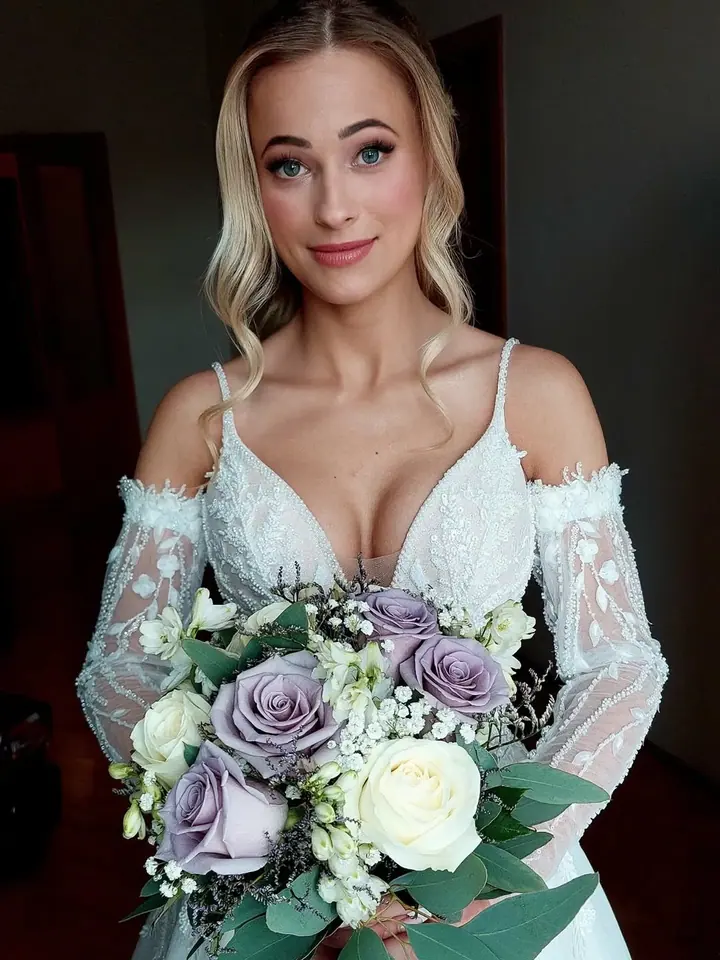
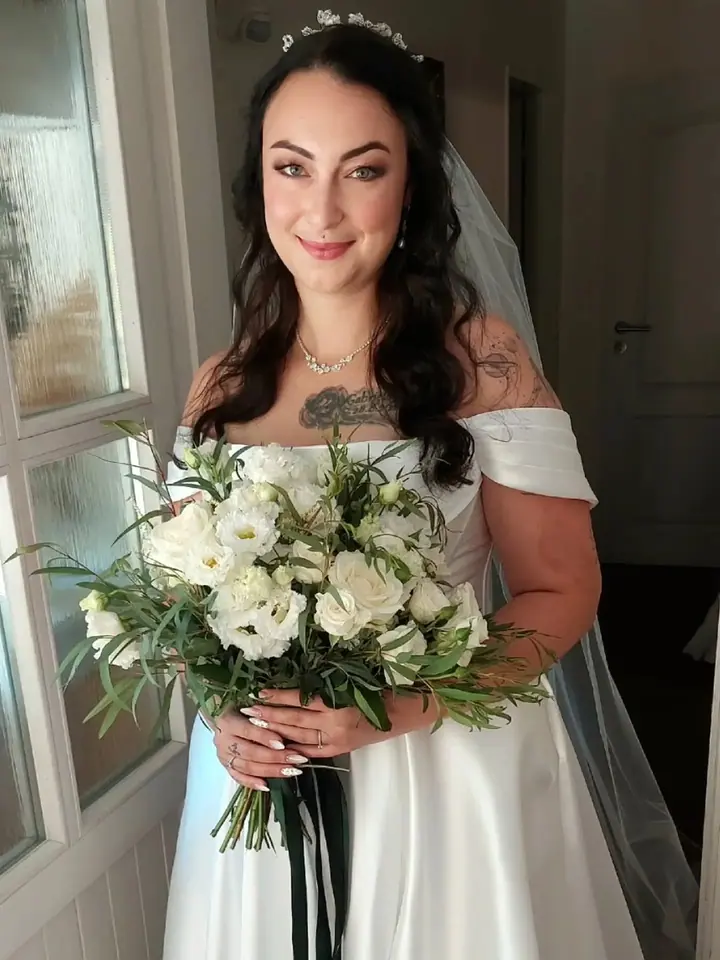

jedna
Svatební vizáž
Ve váš velký den se postarám o líčení i účes, aby se vám při pohledu do zrcadla chtělo jen usmívat. Ráda zkrášlím i maminku, svědkyni, sestry nebo kamarádky.

Svatební vizážistka a vlasová stylistka · Svitavy, Pardubický kraj, Východní Čechy

Jmenuji se Zuzana Havlíková a jsem vizážistka a vlasová stylistka ze Svitav. Nejčastěji připravuji nevěsty, ale ráda vás nalíčím a učešu i na ples nebo na focení. Nechci vás změnit k nepoznání, chci na vás ukázat to krásné a zajímavé.
Více o mněCo fotím
jedna
Ve váš velký den se postarám o líčení i účes, aby se vám při pohledu do zrcadla chtělo jen usmívat. Ráda zkrášlím i maminku, svědkyni, sestry nebo kamarádky.
dvě
Večerní líčení a společenský účes na maturitní ples nebo slavnostní večer. Objednat se můžete kdykoliv během roku.
tři
Fotoaparát bývá nekompromisní, proto se před focením vyplatí správné líčení. Kruhy pod očima ani pupínky pak nemají šanci a vlasy zkrotíme také.
Pro ty, které se šminkami zatím nenavázaly bližší vztah. Probereme péči o pleť, produkty, štětce i vaši kosmetiku a pak se pod mým vedením nalíčíte sama.
Nechte svoji hvězdu zazářit.
Za objektivem
Kdyby mi někdo před deseti lety řekl, že budu krášlit ženy, asi bych se jen pousmála. Dnes se líčení aktivně věnuji už osmým rokem a jsem vděčná všem náhodám, které mě postrčily tím správným směrem.
Prošla jsem školeními u vizážistek z České republiky a své znalosti dál prohlubuji kurzy a semináři. Učení mě vždycky bavilo a je pro mě důležité nabízet aktuální trendy. Pracuji s kosmetikou značek jako Estee Lauder, Inglot, Mac, Anastasia Beverly Hills nebo Makeup for ever. S žádnou značkou nespolupracuji, používám jen produkty, které mám vyzkoušené.
Zakládám si na osobním a přátelském přístupu. Svatební den je krásný, ale náročný, a i vizážistka může pomoct uvolnit atmosféru a nevěstu uklidnit. Nemusíte se bát, ani když nejste zvyklá se líčit. Respektuji každou ženu a její přání.
Zuzana
Napište mi datum svatby, místo příprav, čas obřadu, jestli chcete zkoušku a kolik dalších svatebčanek mám připravit. Klidně přiložte i fotky účesu nebo líčení, které se vám líbí.
Na zkoušce sladíme představy o líčení i účesu a hlavně se poznáme. Platí se na ní předem domluvená část ceny, většinou 50 %.
Přijďte odlíčená, ať si pleť odpočine. Vlasy si umyjte ideálně den předem a vynechte kondicionéry a olejíčky, které je zatíží.
Přijedu za vámi na vámi vybrané místo. Pro nevěstu mám vyhrazené tři hodiny, zbytek ceny se doplácí v den svatby.
Portfolio
Otázky
Určitě. Respektuji každou ženu a její přání, výsledek domluvíme na zkoušce tak, abyste se cítila sama sebou.
Ano. Pracuji s kvalitními produkty, které spolu s technikou zajistí dlouhou výdrž. Během dne stačí případně přepudrovat nebo doplnit rtěnku.
Ano, ráda se postarám i o další svatebčanky. Záleží ale na čase obřadu, protože pro nevěstu mám vyhrazené tři hodiny, tak s tím při plánování počítejte.
Zálohy v současné době neberu. Na zkoušce se platí předem určená částka, většinou 50 %, a zbytek se doplácí v den svatby.
Napište pár vět o tom, co si představujete. zuzana.havlikova1@seznam.cz